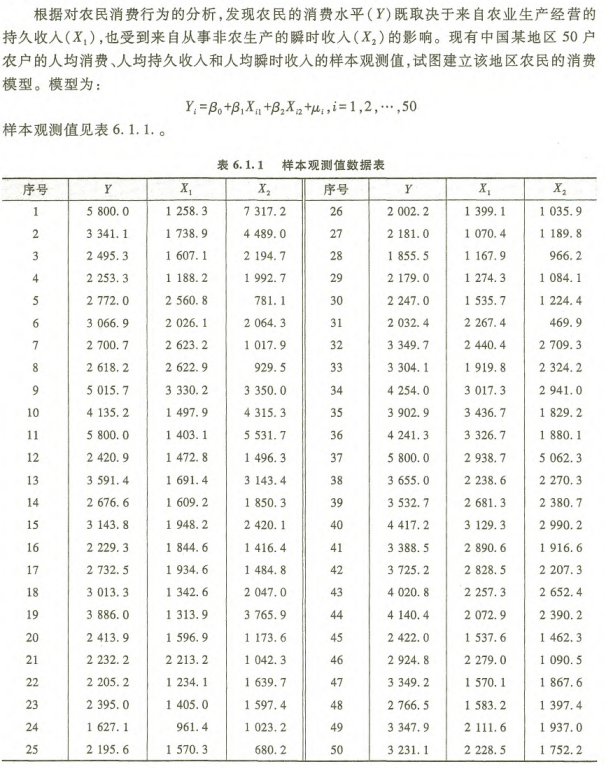
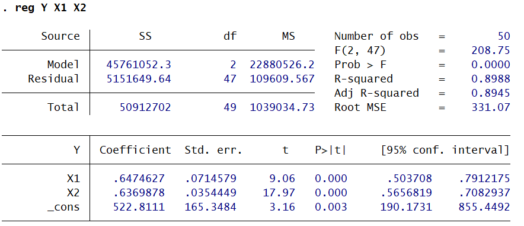
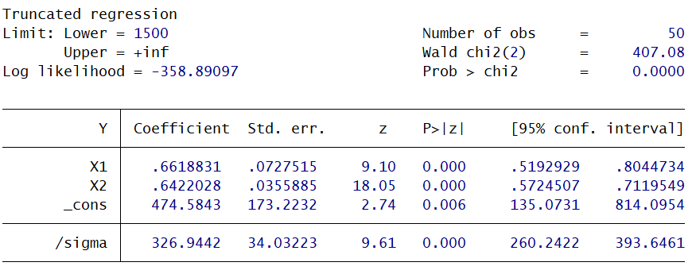
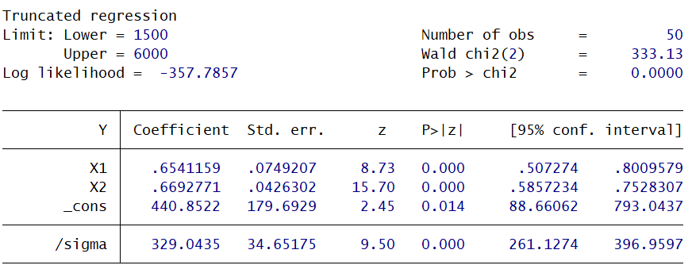
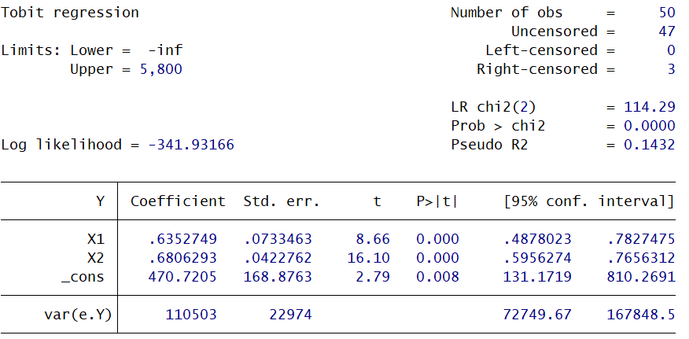

本期内容
- 选择性样本模型
- 固定效应面板数据模型
选择性样本模型
截断问题
问题介绍
截断是选择性样本模型的典型场景，指被解释变量的抽样并非覆盖全体研究对象，而是因规则限制仅能获取部分范围的观测值，属于非经典截面数据的重要类别。
阶段数据又可分为两类：
第一类是有明确截断点的截断：样本仅能取到大于或小于某个确定数值的观测值，相当于对原始分布做了“掐头”或“去尾”。比如研究农户消费行为时，仅抽取人均消费高于1500元的农户样本，低于该门槛的农户完全没有被纳入抽样范围。
第二类是无明确截断点的截断：样本仅来自具备特定属性的群体，观测值本身和其他群体没有清晰的数值分界，但抽样范围天然受限。典型例子是仅用上市公司数据研究全部企业的经营特征，未上市企业完全不在抽样框内，不存在可明确界定的被解释变量截断值。
截断分布的条件密度函数
截断数据的本质是对原始总体分布施加了取值范围限制：只有落在特定区间的观测值能被抽中，因此单个观测值的抽取概率、整体样本的联合概率，都和未截断的原始分布完全不同，本质属于条件概率分布。
如果直接用未截断的分布去拟合样本，会错误计算观测值的出现概率，因此必须先推导截断后的条件密度函数，再做参数估计。
单侧截断
即仅能观测到 $y_i^* > a$ 的样本，对应的条件密度函数为：
$$ f(y_i \mid y_i > a) = \frac{f(y_i)}{P(y_i > a)} = \frac{\frac{1}{\sigma}\phi\left(\frac{y_i - X_i\beta}{\sigma}\right)}{1 - \Phi\left(\frac{a - X_i\beta}{\sigma}\right)} $$其中 $\Phi(\cdot)$ 是标准正态分布的累积分布函数，分母 $1-\Phi\left(\frac{a - X_i\beta}{\sigma}\right)$ 是 $y_i^*$ 大于截断点 $a$ 的总概率，作用是保证条件密度在取值区间上的积分等于1。
双侧截断
即仅能观测到 $a < y_i^* < b$ 的样本，对应的条件密度函数为：
$$ f(a < y_i < b) = \frac{f(y_i)}{P(a < y_i^* < b)} = \frac{\frac{1}{\sigma}\phi\left(\frac{y_i - X_i\beta}{\sigma}\right)}{\Phi\left(\frac{b - X_i\beta}{\sigma}\right) - \Phi\left(\frac{a - X_i\beta}{\sigma}\right)} $$极大似然估计
构造对数似然函数
对于样本量为 $n$ 的左截断样本（假设截断点为 $a$），似然函数是所有观测值的条件概率密度函数的乘积。取对数后，对数似然函数为每个观测值条件密度的对数之和：
$$ \ln L = \sum_{i=1}^{n} \left[ \ln \left( \frac{1}{\sigma} \phi \left( \frac{y_i - X_i\beta}{\sigma} \right) \right) - \ln \left( 1 - \Phi \left( \frac{a - X_i\beta}{\sigma} \right) \right) \right] $$将其展开，利用正态分布的性质整理后可以写成：
$$ \ln L = -\frac{n}{2} \ln(2\pi) - n \ln \sigma - \frac{1}{2\sigma^2} \sum_{i=1}^{n} (y_i - X_i\beta)^2 - \sum_{i=1}^{n} \ln \left( 1 - \Phi \left( \frac{a - X_i\beta}{\sigma} \right) \right) $$求解参数
对上述似然函数分别关于 $\beta$ 和 $\sigma$ 求一阶极值条件（即求导并令导数为0），得到的是非线性方程组。
由于该方程组通常没有解析解，无法直接通过代数运算得出结果，必须通过迭代法（如牛顿法、BFGS算法等数值优化算法）求解，最终得到参数的估计量 $\hat{\beta}$ 和 $\hat{\sigma}$。
反米尔斯比例
在推导截断模型和后续的学习中，公式里的 $\lambda_i = \frac{\phi(\alpha_i)}{1 - \Phi(\alpha_i)}$ 是一个极其重要的统计量，被称为反米尔斯比例简称(IMR)。
从直观上看，反米尔斯比例衡量的是在给定截断规则下，观测值落在样本范围内的“风险率”或“调整因子”。它反映了因为存在截断限制，导致观测值出现的相对概率相对于未截断情况的变化程度。
实例演示
这里使用李子奈《计量经济学第五版》第205页的数据为例进行演示。

使用下述代码进行三种不同的回归：
|
|
第一行代码结果如下：

第二行代码结果如下：

第三行代码结果如下：

用OLS估计会怎么样
下面使用数学推导证明此时OLS估计有偏： $E(y|y > a) = \int_{a}^{+\infty} y \cdot \frac{\frac{1}{\sigma}\phi\left( \frac{y - B^T x}{\sigma} \right)}{1 - \Phi\left( \frac{a - B^T x}{\sigma} \right)} dy$
令 $z = \frac{y - B^T x}{\sigma}$，则 $y = B^T x + z\sigma$，$dy = \sigma \cdot dz$
$\Rightarrow I = \int_{\alpha}^{+\infty} (B^T x + z\sigma) \cdot \frac{\phi(z)}{1 - \Phi(\alpha)} dz$
$= B^T x \cdot \int_{\alpha}^{+\infty} \frac{\phi(z)}{1 - \Phi(\alpha)} dz + \sigma \cdot \int_{\alpha}^{+\infty} \frac{z \cdot \phi(z)}{1 - \Phi(\alpha)} dz$
$= B^T x - \frac{\sigma}{1 - \Phi(\alpha)} \cdot \phi(z) \bigg|_{\alpha}^{+\infty}$
$= B^T x + \frac{\sigma}{1 - \Phi(\alpha)} \cdot \phi(\alpha)$
可见截断破坏了误差项均值为零的假设，引入了一个依赖于自变量的非线性修正项（逆米尔斯比率）。OLS 无法识别并分离出这一项，导致将其混淆为截距或斜率的一部分，从而产生系统性偏差。
归并问题
截断与归并的区别
截断 在截断问题中，数据是基于某个界限进行抽样的。这意味着，那些超过上下限的样本在现实中是存在的，但在你的数据集中根本不存在。你只能观察到位于特定区间内的样本。
归并 在归并问题中，所有的样本其实都被观测到了。但是，对于那些小于（或大于）某个界限的观测值，由于测量工具、制度限制或定义的原因，真实值不可见，统一被记录为一个相同的值（通常是0或某个上限）。
Tobit模型
模型设定与原模型 归并模型通常被称为潜变量模型（Latent Variable Model）。
- 原模型（潜变量）：设真实的、无法直接观测的潜在变量为 $y_i^*$，它由解释变量 $X_i$ 和随机误差项 $\mu_i$ 决定： $$y_i^* = X_i\beta + \mu_i$$
- 观测模型（归并机制）：由于存在“归并”（比如最低为0），我们实际看到的数据 $y_i$ 是：
$$y_i = \max(y_i^*, 0)$$
这意味着：
- 当 $y_i^* > 0$ 时，观测值 $y_i = y_i^*$（数据真实反映潜在值）。
- 当 $y_i^* \le 0$ 时，观测值 $y_i = 0$（数据被归并/截断到0）。
似然函数的构建（最大似然估计） 因为归并数据包含了两类情况（一部分是真实的连续值，一部分是被归并的常数），它的似然函数必须由两部分组成，是一个离散分布与连续分布的混合。
-
第一部分（未受限制的观测值）： 对于那些 $y_i > 0$ 的样本，它们的概率密度就是普通正态分布的密度函数：
$$f(y_i) = \frac{1}{\sigma}\phi\left(\frac{y_i - X_i\beta}{\sigma}\right)$$ -
第二部分（受限制的观测值）： 对于那些 $y_i = 0$ 的样本，我们实际上观测到的是一个“事件发生”的概率，即潜在变量 $y_i^*$ 小于等于0的概率。这部分使用的是累积分布函数（CDF）：
$$P(y_i = 0) = P(y_i^* \le 0) = \Phi\left(\frac{0 - X_i\beta}{\sigma}\right) = 1 - \Phi\left(\frac{X_i\beta}{\sigma}\right)$$(注：在似然函数中，我们通常直接写为 $\ln(1 - \Phi(\dots))$)
-
完整的对数似然函数： 将所有样本的概率加总，得到对数似然函数：
$$\ln L = \sum_{y_i > 0} \ln\left[ \frac{1}{\sigma}\phi\left(\frac{y_i - X_i\beta}{\sigma}\right) \right] + \sum_{y_i = 0} \ln\left[ 1 - \Phi\left(\frac{X_i\beta}{\sigma}\right) \right]$$求解该似然函数的最大值，即可得到模型的参数估计量。
实例演示
这里依旧以之前的数据为例进行演示：
|
|
得到如下结果：

注意：构造归并数据（Tobit）似然函数时，必须基于一个严格前提，即假设被归并（如取值为0）的样本与未受限制的观测样本具有相同的分布（如同为正态分布）；若该假设不成立（即不可观测部分与可观测部分的分布特性存在差异），则无法构建有效的似然函数，导致最大似然估计失效，此时应采用Heckman两步估计法作为替代方案，以修正样本选择带来的偏误。